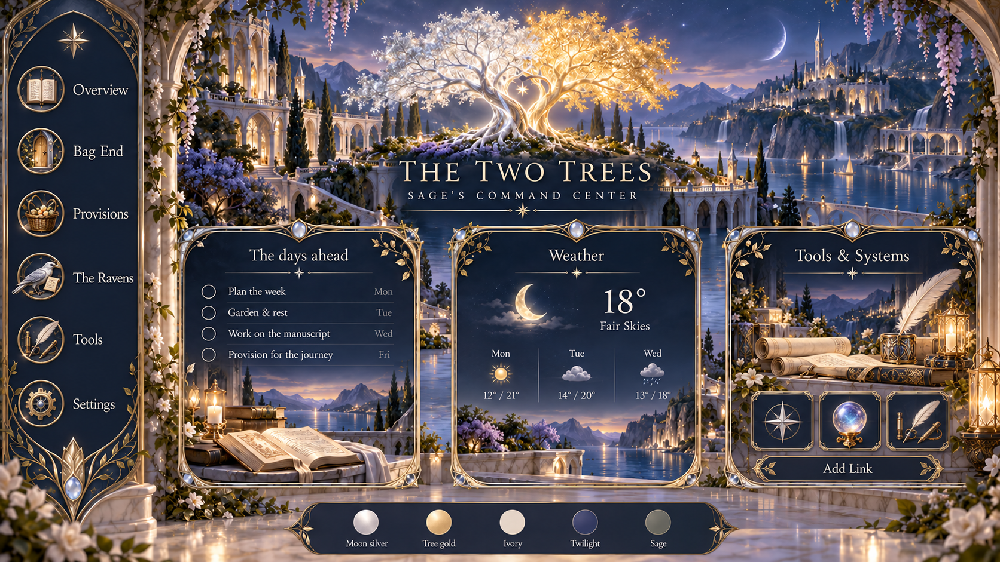
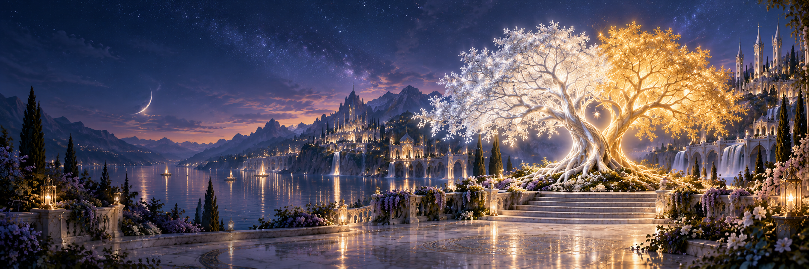
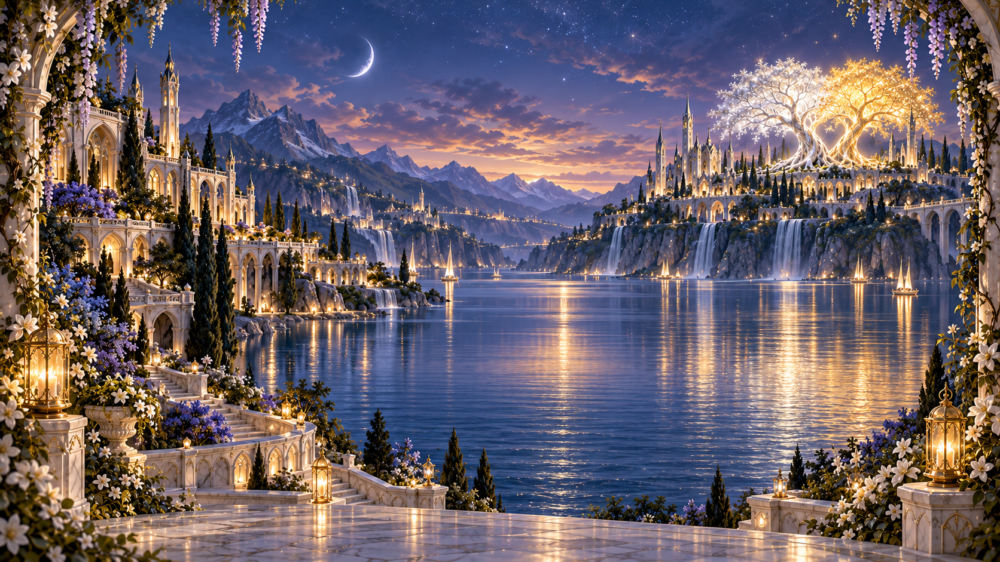
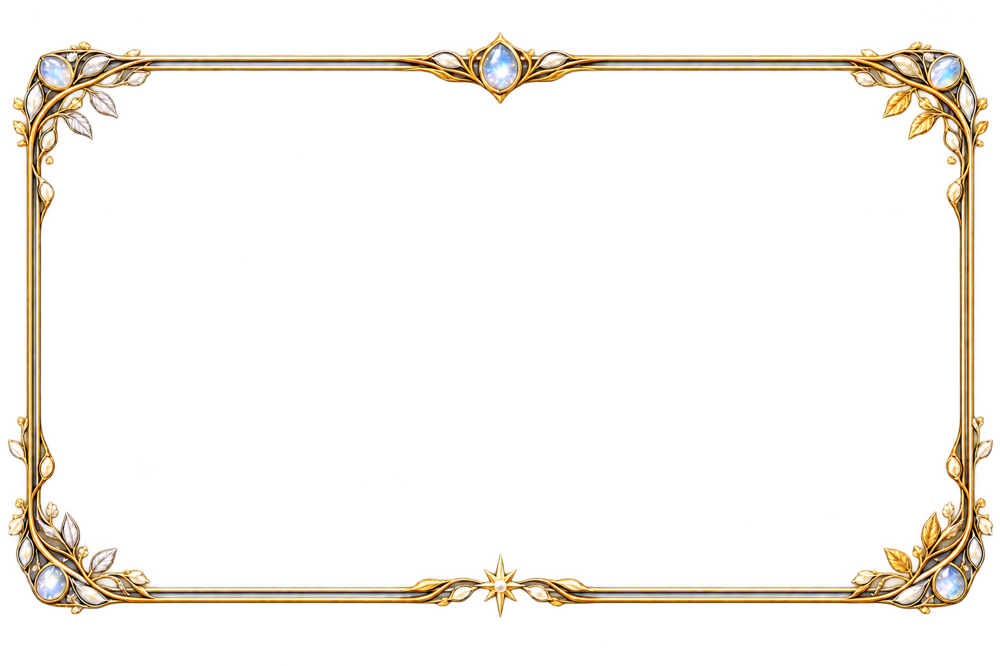
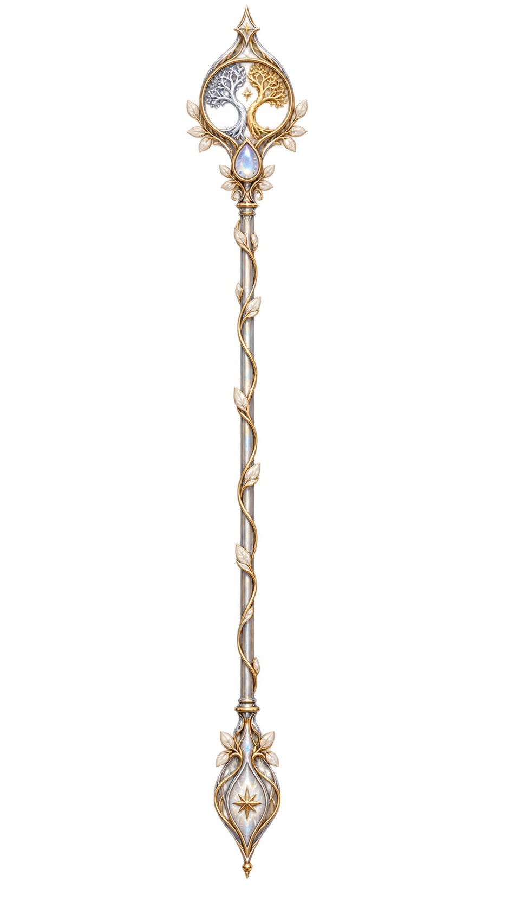
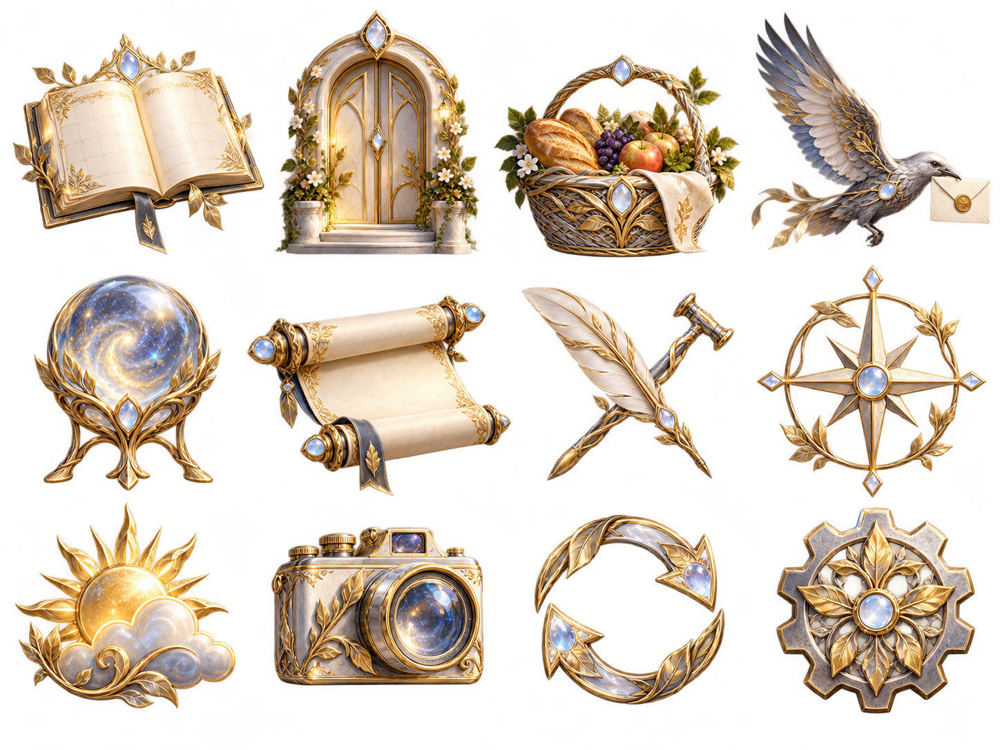
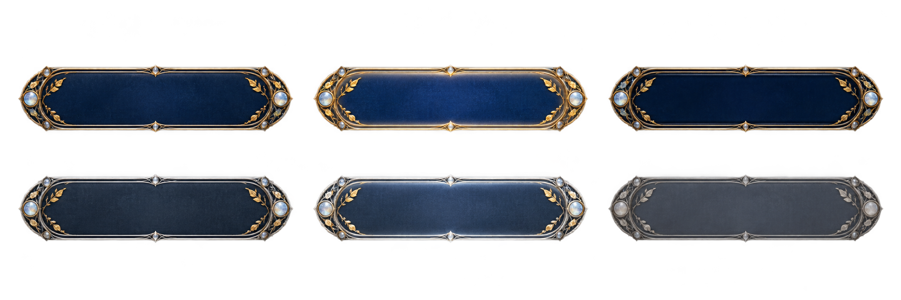

Personal dashboard · Artwork exploration
The Two Trees of Valinor
Silver light, golden leaves, ivory terraces, and deep twilight. A cohesive High Elven visual language for Sage’s command center.
Preserved: Frear’s War Room and Open the Treasury retain their existing themes. This is an artwork review; the live dashboard has not been changed.
Moon silverTree goldIvoryTwilightSage













